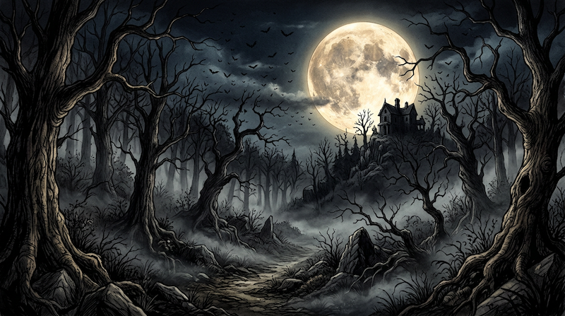

Haunted Houses
Poet Biography LinkAll houses wherein men have lived and died
Are haunted houses. Through the open doors
The harmless phantoms on their errands glide,
With feet that make no sound upon the floors.
We meet them at the door-way, on the stair,
Along the passages they come and go,
Impalpable impressions on the air,
A sense of something moving to and fro.
There are more guests at table than the hosts
Invited; the illuminated hall
Is thronged with quiet, inoffensive ghosts,
As silent as the pictures on the wall.
The stranger at my fireside cannot see
The forms I see, nor hear the sounds I hear;
He but perceives what is; while unto me
All that has been is visible and clear.
We have no title-deeds to house or lands;
Owners and occupants of earlier dates
From graves forgotten stretch their dusty hands,
And hold in mortmain still their old estates.
The spirit-world around this world of sense
Floats like an atmosphere, and everywhere
Wafts through these earthly mists and vapours dense
A vital breath of more ethereal air.
Our little lives are kept in equipoise
By opposite attractions and desires;
The struggle of the instinct that enjoys,
And the more noble instinct that aspires.
These perturbations, this perpetual jar
Of earthly wants and aspirations high,
Come from the influence of an unseen star
An undiscovered planet in our sky.
And as the moon from some dark gate of cloud
Throws o’er the sea a floating bridge of light,
Across whose trembling planks our fancies crowd
Into the realm of mystery and night,—
So from the world of spirits there descends
A bridge of light, connecting it with this,
O’er whose unsteady floor, that sways and bends,
Wander our thoughts above the dark abyss.